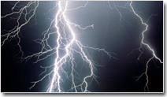

В ІІПТ НАН України розроблені й апробовані унікальні технології й устаткування, що використовують енергію високовольтного розряду в рідині:

- очищення лиття від стрижнів і залишків формувальної суміші з тонко- і товстостінних виливків будь-якого ступеня складності масою від 100 г до 200 т (у тому числі точне лиття);
- обробки призабійних зон нафтових, водозабірних і газових свердловин для підвищення їхньої продуктивності;
- листового штампування й калібрування;
- запресовування труб у трубних ґратах теплообмінних апаратів;
- зняття залишкових напруг при обробці металевих конструкцій;
- руйнування, дроблення й здрібнювання неметалічних матеріалів;
- обробки розплаву в ковші перед розливанням, у кристалізаторі й виливниці для істотного зменшення його структурної, фізичної й хімічної неоднорідності; підвищення службових характеристик металопродукції;
- готування й регенерація мастильно-охолоджувальних рідин (МОР) і різного роду стійких суспензій;
- генератори імпульсних струмів, призначені для електротехнічних пристроїв і электрофізичних установок;
- високовольтні імпульсні конденсатори;
- нові технології.